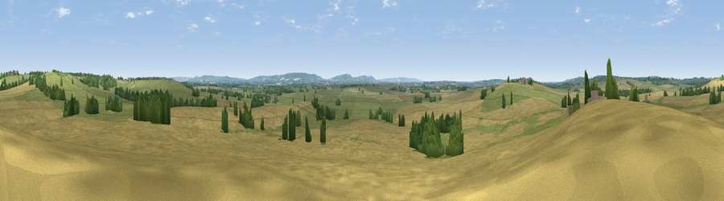

Viewpoint near Rowsham
#25823 in England · top 29% of its area beats it · near Rowsham · access?Where it is
The exact computed spot (SP 83525 18525). Click the marker for map links.
Public access: no public right of way or access land is recorded at this exact spot — it may be on private land. Computed from Natural England's CRoW access layer and OpenStreetMap rights of way — not the legal definitive map. Always verify locally.
The view, rendered

A 360° render of this exact spot computed from the terrain model, tree cover and land cover — summer colours, afternoon light, calibrated against photographs of famous viewpoints. Real trees, hedges and buildings will differ in detail.
The panorama
Grey silhouette: terrain skyline in each direction (720 bearings, Earth curvature and refraction included). Dashed green: skyline with trees (+15 m) and buildings (+8 m) as obstacles. Blue strip: how far the ground is visible on each bearing.
Where the view opens
Wedge length = distance to the farthest visible ground on that bearing (vegetation-aware). Rings at 10, 25 and 50 km.
What fills the view
55% cropland · 39% grassland · 5% woodland ·
Angular shares of the visible panorama (visual magnitude), not map area. Landscape diversity 0.39 (0–1 Shannon).
Key numbers
More beautiful places nearby
The staircase of upgrades: each row has a higher view potential than everything closer. Driving times are estimates from straight-line distance, calibrated against real road routing — check an actual route before setting out.
| Place | Direction | Drive | Score |
|---|---|---|---|
| Viewpoint near Weedon | WSW · 1 km | ~3 min | 45.9 |
| Viewpoint near Aston Abbotts | NNE · 1 km | ~3 min | 48.9 |
| Viewpoint near Quainton | WNW · 8 km | ~16 min | 50.8 |
| Viewpoint near Quainton | WNW · 8 km | ~16 min | 56.5 |
| Quainton Hill | WNW · 9 km | ~18 min | 59.7 |
| Viewpoint near Quainton | WNW · 9 km | ~18 min | 64.9 |
| Viewpoint near Halton | SSE · 10 km | ~19 min | 74.3 |
| Coombe Hill Monument | S · 12 km | ~22 min | 75.5 |
51.85907, -0.78856 · source: screening · position refined by local search. Computed location — check access rights before visiting.